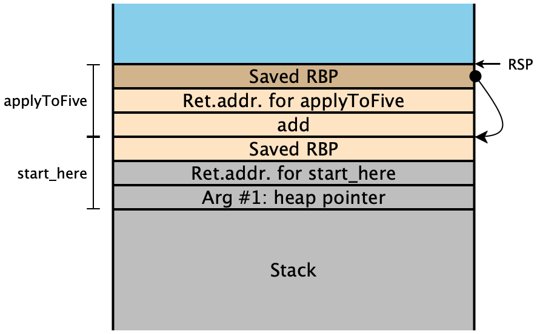
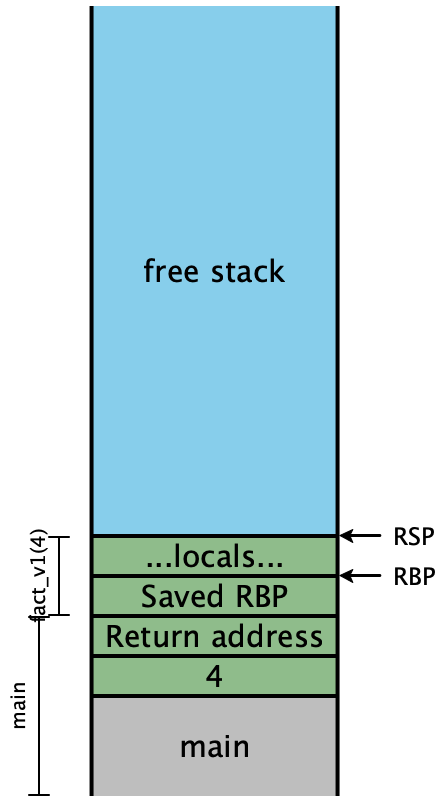
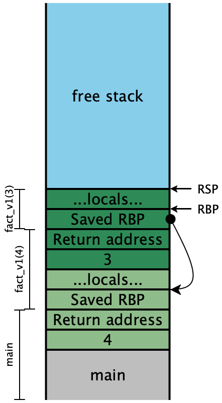
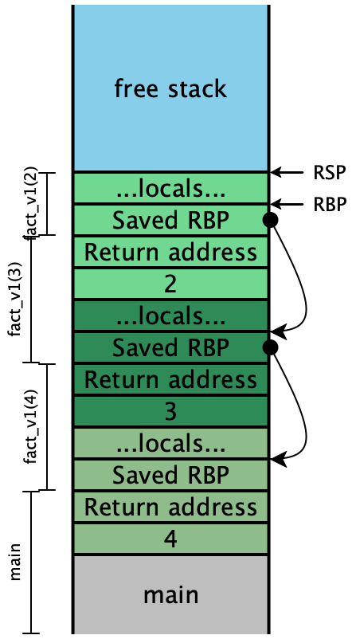
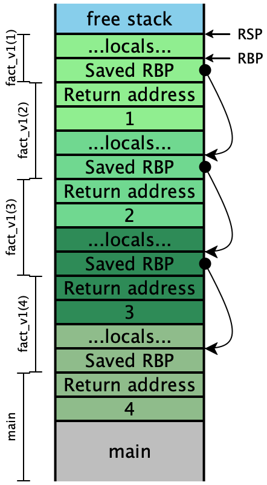
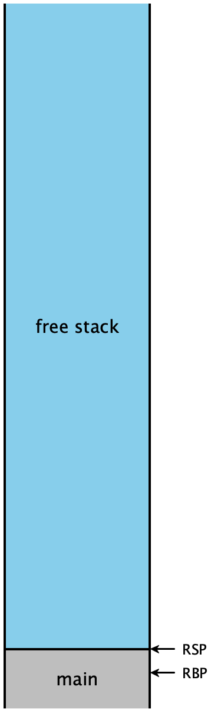

Lecture 9: Proper Tail Calls: Using the stack better
1 A motivating example
A compiler’s job is to faithfully translate the semantics of one language into
another; this much is obvious. However, not all translations are equal: some
can be drastically more efficient than others, to the point where they change
which programs we can actually, effectively run. This is not a claim about
optimization, though. Optimizations typically improve the performance
by some constant factor, meaning the amount of a particular resource (time,
memory, IO, etc.) is lowered by some fraction. Our concern here is about
compiling a ubiquitous feature of our language—
Here is a function from the interp.rs for looking up values in the environment implemented as a linked list:
enum List<T> {
Empty,
Cons(T, Rc<List<T>>),
}
fn get(stk: &List<(&str, i64)>, x: &str) -> Option<i64> {
match stk {
List::Empty => None,
List::Cons((y, n), stk) => {
if x == *y {
Some(*n)
} else {
get(stk, x)
}
}
}
}Here Rc<T> is a reference-counted pointer, but for this example
just think of it as Box<T>.
What are the practical limits of this function? Conceptually, it should work for any list we’ve constructed. But in practice, this code might crash on lengthy lists, simply because the recursion progressed too deeply: we encounter a stack overflow, because we can’t allocate a stack frame for the next recursive call. This is dissatisfying: our language semantics don’t include any arbitrary limits on the depth of recursion. And clearly, whatever machine we ran this program on was capable of building a long list; it seems capricious to then be unable to process it!
Looking more carefully at the program, though, this failure is even more
disappointing. When the if condition is false, we fall through to the
else-branch and start evaluating the recursive call to get. But notice
that when that call returns...the function simply passes the return value back
as its answer, with no further processing needed! It makes sense that
we’d need a stack frame to handle the recursive call, but the current
stack frame is basically no longer needed. Perhaps we could consolidate the
two somehow, and not need any extra space?
2 A simpler example
Let’s consider a program in Diamondback that has a similar recursive structure. Instead of working through a list data structure (which we do not yet have), let’s compute the factorial function:
def fact_v1(n):
if n <= 1: 1
else: n * fact_v1(n - 1)
endAt first glance, this doesn’t match the structure of get since here we
have additional work to do after the recursive call to fact(n - 1).
But we’ve learned ways to transform this program into a similar one, such
that the answer to the recursive call simply is the overall answer: we
use an accumulator parameter, and rewrite the code as follows:
def fact-tail(n, acc):
if n <= 1: acc
else: fact-tail(n - 1, n * acc)
end
def fact_v2(n):
fact-tail(n, 1)
endCompare and contrast the evaluation order of these two functions, using the substitution model of evaluation that we began the course with:
fact_v1(4) ==> if 4 <= 1: 1 else 4 * fact_v1(3)
==> 4 * fact_v1(3)
==> 4 * (if 3 <= 1: 1 else 3 * fact_v1(2))
==> 4 * (3 * fact_v2(2))
==> 4 * (3 * (if 2 <= 1: 1 else 2 * fact_v1(1)))
==> 4 * (3 * (2 * fact_v1(1)))
==> 4 * (3 * (2 * (if 1 <= 1: 1 else 1 * fact_v1(0))))
==> 4 * (3 * (2 * (1)))
==> 4 * (3 * 2)
==> 4 * 6
==> 24
fact_v2(4) ==> fact_tail(4, 1)
==> if 4 <= 1: 1 else fact-tail(4 - 1, 4 * 1)
==> fact_tail(3, 4)
==> if 3 <= 1: 4 else fact-tail(3 - 1, 3 * 4)
==> fact_tail(2, 12)
==> if 2 <= 1: 12 else fact-tail(2 - 1, 2 * 12)
==> fact_tail(1, 24)
==> if 1 <= 1: 24 else fact-tail(1 - 1, 1 * 24)
==> 24The initial version keeps a bunch of multiplications pending, until the
innermost function call returns. It is reasonable to think that in our
compiled code, each of those will correspond to one stack frames, and we
clearly still need to keep track of the intermediate values of n
in order to compute the final answer.
The second version of the function, though, never has more than one call to
fact-tail pending. Nothing in this evaluation sequence “looks
like” it needs a deep call stack. Can we achieve this?
3 Defining tail position
What distinguishes the recursive calls to fact_v1 from the calls
to fact_tail (or, for that matter, get)? Intuitively, we
described them as “the last thing to be done”, before returning from the
function. We say that such expressions are in tail position, and we can
define such positions explicitly, looking at each expression form in our
language:
The expression of our program is in tail position.
The body of a function is in tail position.
If a let-binding is in tail position, then (a) its body is in tail position, but (b) the bindings themselves are not.
If a conditional is in tail position, then (a) its branches are in tail position, but (b) the condition itself is not.
The operands to an operator are never in tail position.
Visually, green expressions are always in tail position, yellow expressions are potentially in tail position, and red expressions are never in tail position:
pub struct Prog<E, Ann> {
pub funs: Vec<FunDecl<E, Ann>>,
pub ~hl:3:s~main: E~hl:3:e~
pub ann: Ann,
}
pub struct FunDecl<E, Ann> {
pub name: String,
pub parameters: Vec<String>,
pub ~hl:3:s~body: E~hl:3:e~,
pub ann: Ann,
}
pub enum SeqExp<Ann> {
Imm(~hl:2:s~ImmExp~hl:2:e~, Ann),
Prim1(Prim1, ~hl:2:s~ImmExp~hl:2:e~, Ann),
Prim2(Prim2, ~hl:2:s~ImmExp~hl:2:e~, ~hl:2:s~ImmExp~hl:2:e~, Ann),
Let {
var: String,
~hl:2:s~bound_exp: Box<SeqExp<Ann>>~hl:2:e~,
~hl:1:s~body: Box<SeqExp<Ann>>~hl:1:e~,
ann: Ann,
},
If {
~hl:2:s~cond: ImmExp~hl:2:e~,
~hl:1:s~thn: Box<SeqExp<Ann>>~hl:1:e~,
~hl:1:s~els: Box<SeqExp<Ann>>~hl:1:e~,
ann: Ann,
},
~hl:1:s~Call~hl:1:e~(String, ~hl:2:s~Vec<ImmExp>~hl:2:e~, Ann),
}We can codify this, if we so choose, as a kind of tagging operation:
fn mark_tails<Ann>(e: &SeqExp<Ann>, is_tail: bool) -> SeqExp<bool> {
match e {
SeqExp::Imm(i, _) => SeqExp::Imm(i.clone(), is_tail),
SeqExp::Prim1(op, i, _) => SeqExp::Prim1(*op, i.clone(), is_tail),
...
SeqExp::Let {
var,
bound_exp,
body,
..
} => SeqExp::Let {
var: var.clone(),
bound_exp: Box::new(mark_tails(bound_exp, false)),
body: Box::new(mark_tails(&body, is_tail)),
ann: is_tail,
},
SeqExp::If { cond, thn, els, .. } => SeqExp::If {
cond: cond.clone(),
thn: Box::new(mark_tails(thn, is_tail)),
els: Box::new(mark_tails(els, is_tail)),
ann: is_tail,
},
}
}In practice we probably don’t need to, and instead can just carry along a
boolean flag through our compile_with_env function that keeps track of our
tail-position status:
fn compile_with_env<'exp>(
e: &'exp SeqExp<u32>,
.., // other arguments
is_tail: bool) // true when the expression is in tail position
-> Vec<Instr> {
match e {
...
SeqExp::Let { var, bound_exp, body, ann } => {
...
let bound_exp_is = compile_with_env(bound_exp, ..., false);
...
let body_is = compile_with_env(body, ..., is_tail)
}
SeqExp::Call(fun, args, ann) => {
if is_tail {
// generate a tail call
} else {
// generate a non-tail call
}
}
...
}
}4 Examining the stack
Let’s consider what the stack looks like while evaluating
fact_v1. In this diagram, colors indicate which stack frame
uses a particular value on the stack, while the brackets indicate which stack
frame created a particular value on the stack. In this example we are
using the stack-only calling convention, where all function arguments are
pushed onto the stack.
In top-level |
| In |
| In |
| In |
| In |
At |
| At |
| At |
| At |
| About to return |
|
|  |
|
|
|
|
|
|


Now let’s examine the stacks for fact_v2, assuming we compile our
code exactly as we’ve always been. We’ll include the local variables, this time:
In top-level |
| In |
| In |
| In |
| In |
At |
| At |
| At |
| At |
| About to return |
 |
|  |
|  |
|  |
|  |
Because the recursive calls here are all in tail-position, the next four
instructions are all going to be ret instructions, which means the
entirety of this stack can effectively be eliminated in one step. In other
words, once the olive stack frame makes the call to the dark green frame,
we never need to access an olive stack slot again. Looking carefully
at the stack, we see that the next values for n and
acc are precisely the local values computed in the
previous stack frame, and moreover, each stack frame has exactly the
same shape. If instead of creating a new stack frame, we simply
reused the existing one, then we wouldn’t need more than constant
stack depth to provide arbitrary call depth!
5 Strategy
Rather than pushing the next set of arguments onto the stack, simply
move them into the existing stack slots at RBP + 16, RBP + 24,
etc. Once we’ve done that, we need to re-enter our existing function, but we
can’t use call to do it.
Do Now!
Why not?
The meaning of call is to push a return address onto the stack and jump
to the destination address. But we already have the necessary return address
sitting on the stack! We also have a saved RBP on the stack too, which
means that the function prologue we normally execute isn’t really needed here.
So instead, we’ll simply jump directly to the next instruction in our
code. The compiled assembly for fact_tail would then look
roughly like this (ignoring all tag checks, and simplifying the condition
slightly):
fact_tail:
fact_tail_prologue:
push RBP
mov RBP, RSP
sub RSP, 16 ; reserve stack slots
fact_tail_body:
mov RAX, [RBP + 16] ; load n
cmp RAX, 2 ; compare to representation of 1
jg keep_going
mov RAX, [RBP + 24] ; load acc into answer
mov RSP, RBP ; and return directly
pop RBP ; to the original
ret ; caller
keep_going:
mov RAX, [RBP + 16] ; \
sub RAX, 2 ; | compute n - 1
mov [RBP - 8], RAX ; /
mov RAX, [RBP + 16] ; \
sar RAX, 1 ; |
imul RAX, [RBP + 24] ; | compute n * acc
mov [RBP - 16], RAX ; /
mov RAX, [RBP - 8] ; \
mov [RBP + 16], RAX ; / OVERWRITE argument n
mov RAX, [RBP - 16] ; \
mov [RBP + 24], RAX ; / OVERWRITE argument acc
jmp fact_tail_body ; AND RESTART fact_tailThis code is almost legible enough that we could turn it into Rust code pretty easily:
fn fact_tail(mut n: i64, mut acc: i64) -> i64 {
while true {
if n <= 1 {
return acc;
} else {
let tmp1 = n - 1;
let tmp2 = n * acc;
n = tmp1;
acc = tmp2;
}
}
}We’ve turned our (tail-)recursive function into a while-loop, and eliminated all the function calls!
6 Implementation pitfalls
6.1 Reusing arguments
Consider the following code:
def max(x, y):
if y >= x: y
else: max(y, x)This is clearly tail-recursive, so we can apply the same technique above.
Since we have no intermediate expressions (again, simplifying the conditional),
we don’t even need to move RSP at all; all our values are already on the stack:
max:
max_prologue:
push RBP
mov RBP, RSP
max_body:
mov RAX, [RBP + 24] ; load y
cmp RAX, [RBP + 16] ; compare to x
jl keep_going
mov RAX, [RBP + 24] ; load y into answer
mov RSP, RBP ; and return directly
pop RBP ; to the original
ret ; caller
keep_going:
mov RAX, [RBP + 24] ; \
mov [RBP + 16], RAX ; / OVERWRITE argument x
mov RAX, [RBP + 16] ; \
mov [RBP + 24], RAX ; / OVERWRITE argument y
jmp max_body ; AND RESTART maxDo Now!
What went horribly wrong?
Exercise
Try to fix it.
Try tracing through two simple calls to max, to test both
branches of the if expression, and carefully step through the
generated assembly. If we call max(10, 20), then we fall through
the jl instruction, and end up returning [RBP + 12], which is
y as expected. But suppose we try max(20, 10).
then we fall through to keep_going, where we load the current value of
[RBP + 12] and overwrite [RBP + 8] with it, which effectively
copies y into x. Then we load the current value of
[RBP + 8] and copy it into [RBP + 12], in an attempt to copy the
current value of x into y —x is gone! So the effect of our tail-call of
max(y, x) is to call (10, 10), which then executes
the first branch of the conditional and returns 10.
(Note that if we updated our arguments in the other order, such that we
overwrote y before we overwrote x, we would have an
even more insidious problem: this particular function call would compute the correct
answer! Our call to max(10, 20) would effectively call
max(20, 20) and return 20 —
The problem is that our new arguments to the call reside in addresses that we
are about to overwrite, and we’ve managed to create a cycle from the
address of y, to the value of the
new argument of x, to the address of x to
the value of the new argument of y. Our naive strategy of
simply moving arguments was too simple. Instead, we can try any of the
following strategies in increasing sophistication (or others, in a similar spirit):
At the beginning of every function, just copy all the arguments into new local variables, and then never use the arguments directly again. This ensures that we can’t have cycles, as above, so our tail calls will always work. On the other hand, we’ll use twice as much stack space as needed.
Before every tail call,
pushall the new argument values onto the stack, thenpopthem (in the opposite order) into their correct locations. This is safe, but every tail call temporarily uses a bit more stack space than is necessary.Check whether any of the argument values come from addresses that we’re about to overwrite. If so, use the
push/popapproach above; if not, use the simplermovapproach.Check whether there exists a cycle between new argument values and their locations, as in this
maxexample. For each cycle, break the cycle by pushing one value onto the stack, thenmovthe remaining arguments as needed, thenpopthe last argument of the cycle into its place. For any other arguments, justmovthem as needed.
The last strategy above is optimal: it never uses more that one extra stack
slot at a time, and it uses the minimum number of movs and stack
operations. But it’s also clearly the most complicated, and therefore the
hardest to test and guarantee correct. The next-to-last strategy strikes a
good balance between efficiency and simplicity: the safety condition is easy to
check, and both the push/pop-based code and the mov-based
code handle all arguments in a uniform manner, making it much easier to test.
In a production-quality compiler, we’d obviously like to implement the
most efficient version, and take on the maintenance and correctness burden that
goes with it.
6.2 Changing arities
The technique above is not limited to self-recursion; it works for tail-calls between functions as well, meaning that mutually recursive functions can also be compiled to essentially a while-loop with a few conditions inside it.
However, the technique above works smoothly only for tail calls to callees whose
arities are no greater than their callers’ arities. Suppose function
F calls function G, whose arity is \(A_G\).
Suppose G then tail-calls another function H with arity
\(A_H > A_G\). We have two problems:
First, there isn’t enough room to replace the existing arguments with the intended new ones. We’d need to shift the saved
RBPand return address up by a few stack slots, which themselves might be in use (those might well be the new argument values we want to use!), so we’d have to move them as well. This could easily get expensive.Second, and more importantly, consider what happens when
Hfinally returns toF(note:Gis no longer present; that’s the point of a tail call).Fwill pop off the \(A_G\) arguments it pushed onto the stack...but there are actually now \(A_H\) arguments, and soRSPwill wind up in the wrong place! In other words, the calling convention we’ve described so far is incapable of supporting tail-calls to greater-arity functions.
Obviously, these difficulties are not insurmountable, but they do require some clever thought...
7 Testing
Testing tail calls is not much more difficult than testing regular calls, and
requires just as much dilligence about covering all cases. It is trivial to
convert any tail-call into a non-tail-call, e.g. by adding 0 or by
or’ing with false. Construct tail-recursive test
programs whose recursion depth should otherwise overflow the stack, then use
one of these gimmicks to convert the tail calls into non-tail calls, and
confirm that only the tail-call program runs to completion.
Alternatively, we might implement a new primitive printStack that outputs
us a “stack trace” of the current program, and confirm that the
tail-recursive stack trace is appropriately short, while the non-tail-recursive
one is inordinately long.
As was noted in the aliasing section, we must carefully test that our argument-replacement code never introduces unintentional cycles that produce the wrong results. The difficulty of testing this depends on the complexity of your heuristic for dealing with these cases. Unless the utmost efficiency is paramount, it may make sense to choose a slightly suboptimal compilation strategy and trade off a slight bit of performance for a greater confidence in correctness.
8 Applicability
Do Now!
Does this matter in practice?
Yes. We’ve changed the performance of our compiled code from \(O(n)\) to \(O(1)\), which means we no longer have an artifical limit on the size of problems we can solve with a recursive function.
Do Now!
Ok, fine, but surely this is just an academic problem, a design flaw in functional languages! Surely real languages like OO don’t need to do all this work, right?